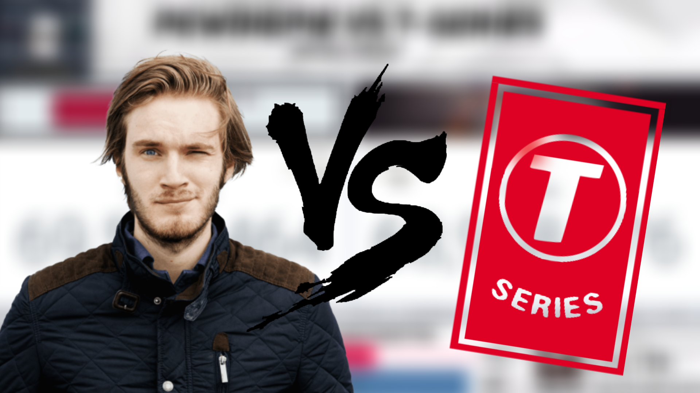

PewDiePie VS T-Series!
As it currently stands, PewDiePie (aka ‘Pewds’), a Swedish gaming commentary YouTuber is currently the most subscribed in the whole world with 69 million subscribers. His reign has lasted for over 5 years running consecutively but this may come to an abrupt end if T-Series, an Indian music record-label and production company takes over the number 1 spot from PewDiePie. This simply must not happen so PewDiePie can keep the #1 spot.
A few weeks ago, ‘Pewds’ came incredibly close to losing his title, however a YouTuber by the name of MrBeast turned the tables by advertising PewDiePie’s channel all over North Carolina as a last stand which has ultimately payed off. The same day T-Series was predicted to take over the title of #1 most subscribed, PewDiePie gained subscribers at an insane rate of 300k in the first few hours of the video being uploaded. Pewds’ channel was saved from the insufferable fate of being #2 for the first time in 5 years.
To secure PewDiePie’s number 1 spot, the whole world (with access to the Internet) must take action. We must delete T-Series from YouTube, make a bunch of fake YouTube accounts and then subscribe to PewDiePie. It doesn’t end there either, you have to get your friends, family, even your 98 year old grandma, to subscribe to Pewds for the sweet victory royale.